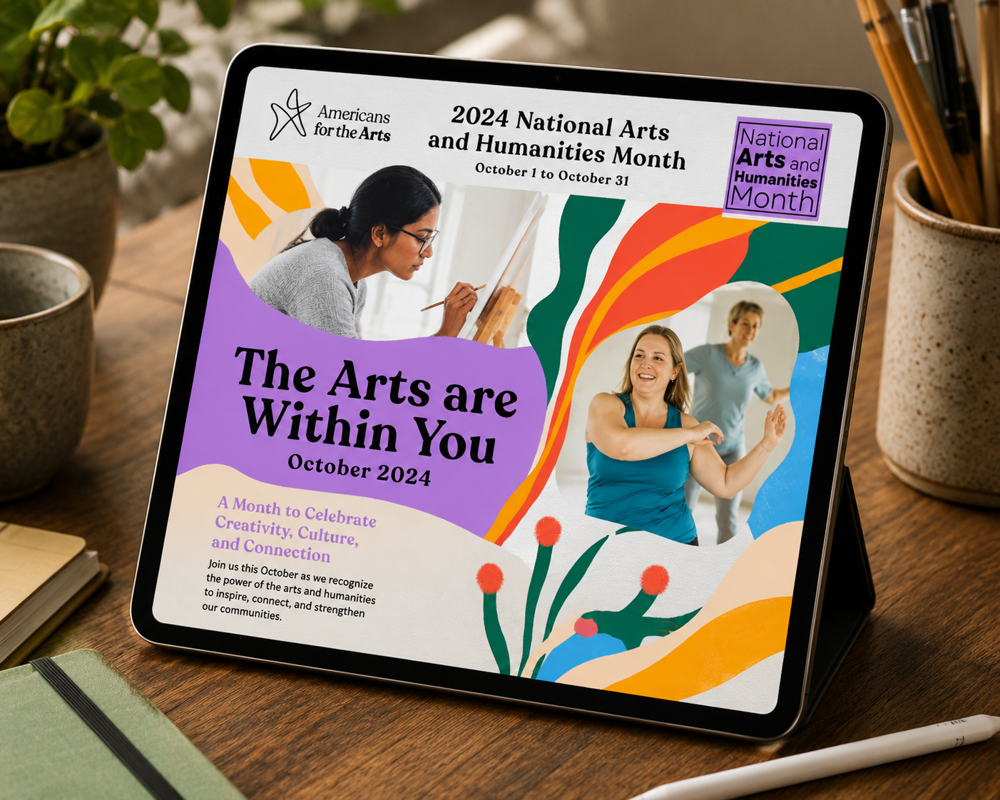
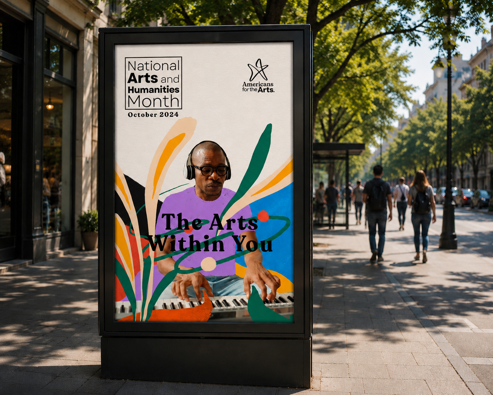
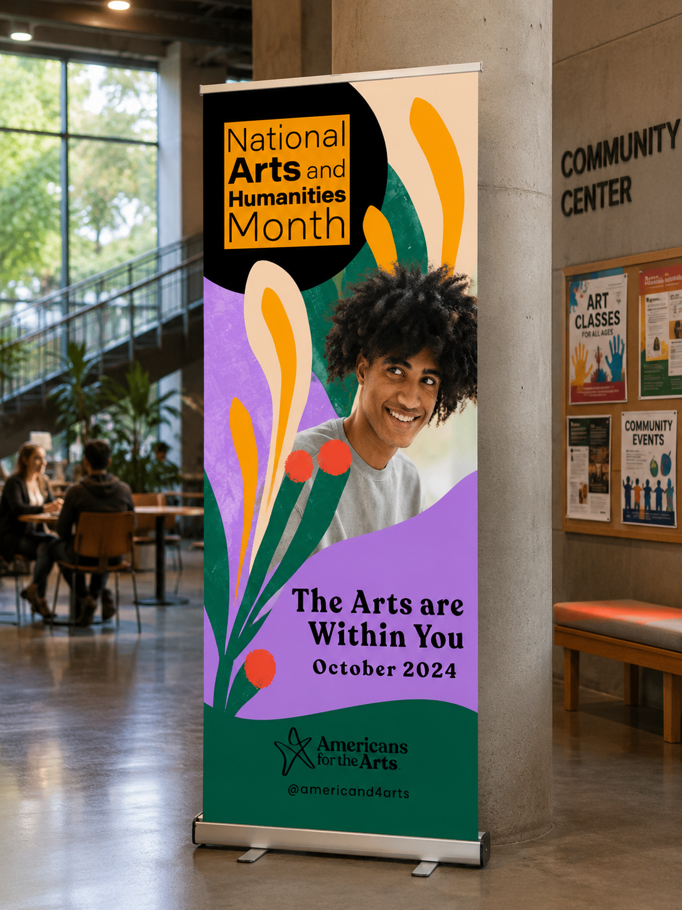

<title>María Méndez — National Arts &amp; Humanities Month</title>
<meta name="viewport" content="width=device-width, initial-scale=1.0">
<link rel="icon" type="image/png" href="assets/favicon.png">

<link rel="stylesheet" href="styles/variables.css">
<link rel="stylesheet" href="styles/base.css">
<link rel="stylesheet" href="styles/components.css">
<link rel="stylesheet" href="styles/page-project.css">

<!-- ─── NAV ─────────────────────────────────────────────────── -->
<nav class="comp-nav page-project--campaigns">
  <a class="comp-nav__logo" href="work.html">Maria Mendez</a>
  <ul class="comp-nav__links">
    <li class="is-active"><a href="work.html">Work</a></li>
    <li><a href="about.html">About</a></li>
    <li data-placeholder>Shop</li>
    <li><a href="contact.html">Contact</a></li>
  </ul>
  <div class="comp-nav__dot"></div>
</nav>

<!-- ─── PAGE ─────────────────────────────────────────────────── -->
<main class="page-project page-project--campaigns">

  <!-- PROJECT HEADER -->
  <header class="project-header">

    <div class="project-header__left">
      <p class="project-category">Campaigns · 2024</p>
      <h1 class="project-title">National Arts &amp;<br>Humanities Month</h1>
      <div class="comp-spec-sheet">
        <div class="spec-item">
          <div class="spec-label">Client</div>
          <div class="spec-value">Americans for the Arts</div>
        </div>
        <div class="spec-item">
          <div class="spec-label">Discipline</div>
          <div class="spec-value">Diseño de campaña, Dirección de arte &amp; Diseño gráfico</div>
        </div>
        <div class="spec-item">
          <div class="spec-label">Year</div>
          <div class="spec-value">2024</div>
        </div>
      </div>
      <button type="button" class="cta-link gallery-view-all js-view-gallery">Ver toda la galería →</button>
      <p class="gallery-note">Arrastra las imágenes para moverlas · Doble clic para ver en galería</p>
    </div>

    <div class="project-header__right">
      <p class="project-desc">Campaña digital e impresa desarrollada para National Arts &amp; Humanities Month de Americans for the Arts, bajo el concepto "The Arts Within You". La campaña celebra cómo el arte y las humanidades viven dentro de cada persona, explorando diferentes disciplinas artísticas y creando un lenguaje visual vibrante a partir de la combinación de técnicas manuales, fotografía, ilustración y collage.</p>
      <p class="project-desc">El sistema se adaptó a múltiples formatos y puntos de contacto: desde materiales digitales y contenido para redes sociales hasta piezas impresas y aplicaciones en distintos espacios de Washington, D.C., creando una campaña capaz de llevar el mensaje de manera cercana y dinámica a diferentes públicos.</p>
      <p class="project-desc project-desc--secondary">La identidad visual busca representar el arte como algo que no está únicamente en museos o escenarios, sino que forma parte de todos nosotros. La mezcla de texturas hechas a mano, imágenes fotográficas y composiciones de collage genera un universo espontáneo, colorido y lleno de movimiento, celebrando la diversidad de formas en las que las artes y las humanidades se manifiestan en la vida cotidiana.</p>
    </div>

  </header>

  <!-- GALLERY — Layout B only -->
  <section class="comp-gallery-interactive"
    data-gallery-cover="assets/projects/national-arts-and-humanities-month/national-arts-and-humanities-month-cover.png"
    data-gallery-extra='[
      {"src":"assets/projects/national-arts-and-humanities-month/national-arts-and-humanities-month-07.png"},
      {"src":"assets/projects/national-arts-and-humanities-month/national-arts-and-humanities-month-08.png"}
    ]'>

    <div class="comp-drag-hint" id="dragHint">Move to Explore →</div>

    <div class="gallery-canvas" id="galleryCanvas">

      <div class="gallery-piece gp-1" data-rotation="-8">
        
      </div>

      <div class="gallery-piece gp-2" data-rotation="6">
        
      </div>

      <div class="gallery-piece gp-3" data-rotation="-4">
        
      </div>

      <div class="gallery-piece gp-4" data-rotation="9">
        
      </div>

      <div class="gallery-piece gp-5" data-rotation="-6">
        
      </div>

      <div class="gallery-piece gp-6" data-rotation="3">
        
      </div>

    </div>
  </section>

</main>

<script src="scripts/gallery.js"></script>
